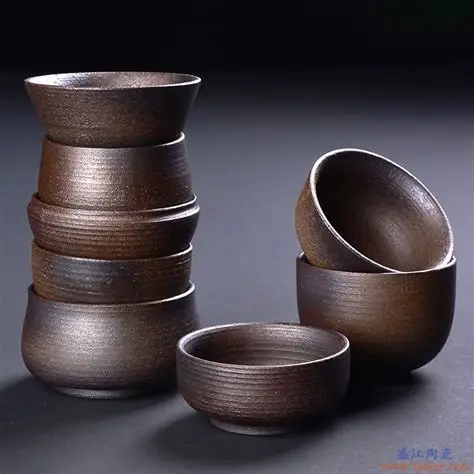
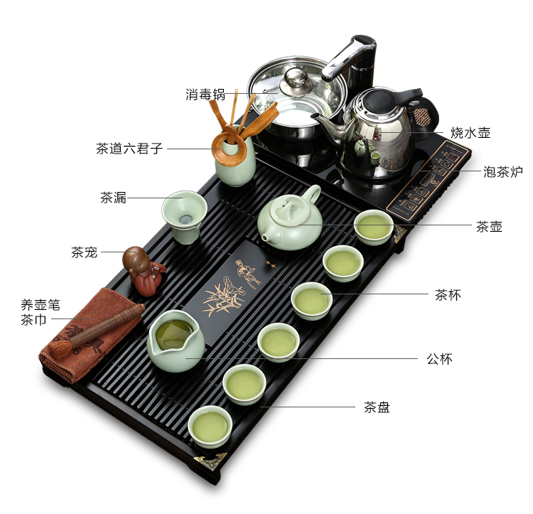
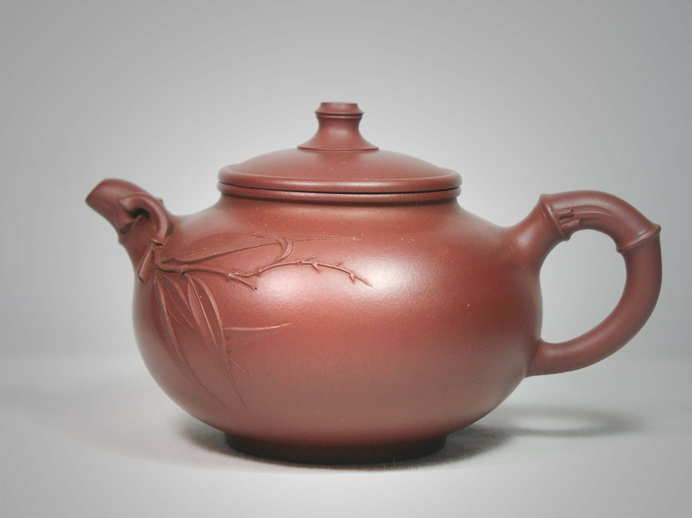
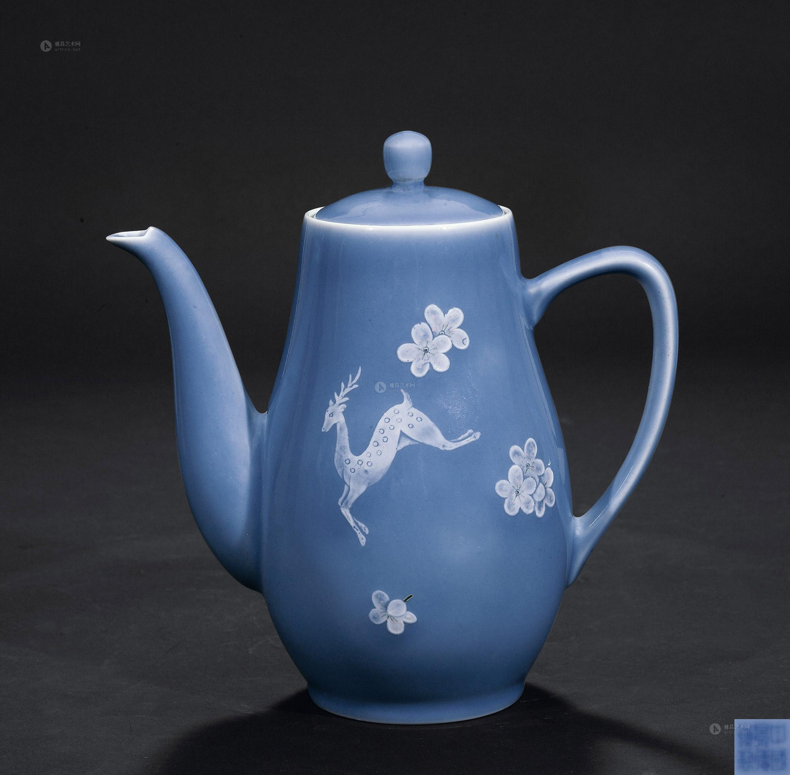

茶具文化
工欲善其事，必先利其器 - 探索茶具的艺术与功能
茶具不仅是泡茶的工具，更是承载茶文化的重要载体。从古朴的紫砂到精美的瓷器，从实用的功能到艺术的表达，茶具见证了中国茶文化的演变与发展。
主要茶具类型

茶壶
泡茶的主要器具，根据材质可分为紫砂壶、瓷壶、玻璃壶等。
- 紫砂壶 - 透气性好，适合泡乌龙茶、普洱茶
- 瓷壶 - 不吸味，适合泡绿茶、花茶
- 玻璃壶 - 透明美观，适合观赏茶叶舒展

茶杯
品饮茶汤的器具，讲究与茶性的匹配。
- 品茗杯 - 小巧精致，用于品尝茶汤
- 闻香杯 - 细长高深，用于闻茶香
- 盖碗 - 一器三用，可泡可饮

辅助茶具
完善茶道流程的各种辅助器具。
- 茶盘 - 承放茶具，接水排水
- 茶则 - 量取茶叶的工具
- 茶夹 - 夹取茶杯，卫生方便
- 茶漏 - 防止茶叶外泄
- 茶巾 - 擦拭茶具，保持清洁
茶具材质

紫砂
产自江苏宜兴，双气孔结构，透气不透水，能吸收茶香，适合泡发酵茶。

瓷器
表面光滑，不吸味，易清洗，能真实反映茶汤本色，适合泡各类茶叶。

玻璃
透明美观，便于观赏茶叶舒展和茶汤颜色变化，适合泡绿茶、花茶。

竹木
天然材质，轻便环保，多用于茶盘、茶则等辅助茶具，增添自然气息。